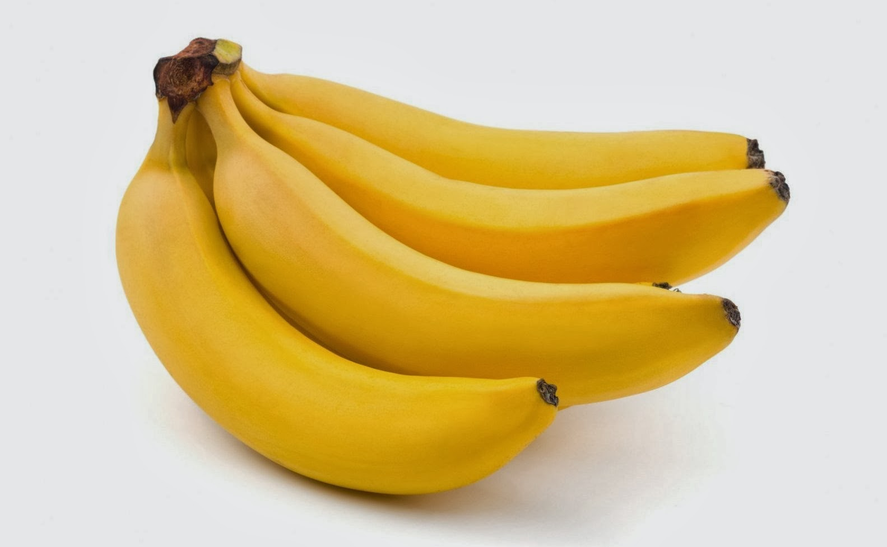
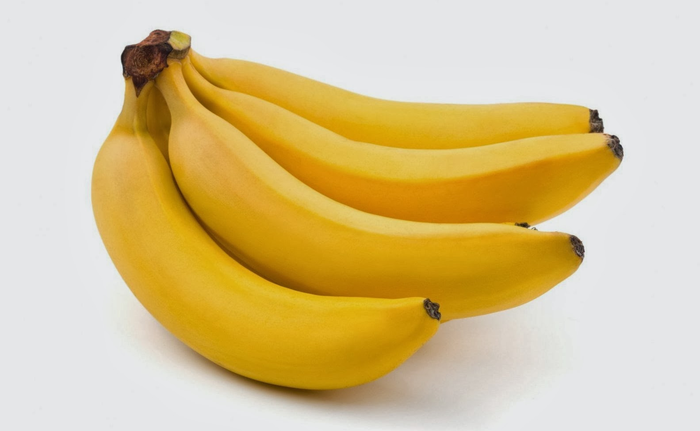

El plátano aporta energía rápida, vitaminas, minerales y fibra que favorecen la digestión y la salud cardiovascular.
 Volver al mapaEl plátano aporta energía rápida, vitaminas, minerales y fibra que favorecen la digestión y la salud cardiovascular.
 Volver al mapa